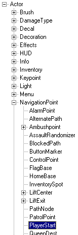

Place A Playerstart
This page is one of a sequence of Mapping Lessons.
Previous tutorial:
- You've created a basic space in your map: Subtract A Space
Overview
OK, so far you've got a box with some light. You're almost there!. This page covers the final step: placing a PlayerStart actor. This marks a spot where players are spawned in the game. Without one, the game would crash on startup.
Instructions
Selecting the PlayerStart class
This step is only required in versions prior to UnrealEd 3. If you have UT2003/2004 proceed to Adding the PlayerStart.
- Open the Actor Class Browser by selecting: UnrealEd Main Menu → View → Actor Classes Browser
- In the Actor Class Browser window, you'll see a tree structure very much like a directory listing. This is the Class tree. (You can see a text representation of it on the Actor Class Hierarchy page.)
- You need to navigate down the tree to the class you want.
Actor >> NavigationPoint >> PlayerStart.

UnrealEd 2 ActorList; PlayerStart Highlighted. |
Adding the PlayerStart
Right-click on the location you want to place the PlayerStart. The Viewport Context Menu pops up. Select "add PlayerStart Here". If a context menu does not popup then you probably have anti-aliasing turned on in the Advanced area of your Display Properties (In Windows, not UnrealEd). Try turning it off and restarting UnrealEd.
It's a good idea to pick some place on the ground so you and your bots don't spawn out of the air or off of a wall. The best way to get a good distance off the floor is to right-click on the floor in the 3D viewport and select Add PlayerStart Here.
Build
Now build your map and you should be able to spawn out of the PlayerStarts you've placed. It's a good idea to put more PlayerStarts in your map than the recommended maximum number of players for it.
Note: You MUST build your map before a PlayerStart can become active!
Foxpaw: Perhaps an indication of which button to press to build the map would be good.
Play Map!
To play the map with the newly PlayerStarts click on the Play Map! button.
Make sure to at least put enough for every player to be able to have their own spawn point, so they don't telefrag each other upon entering the map.
Next Lesson
- Apply texture – Your recommended next step
Related Topics
- Placing PlayerStart – A guide on placing PlayerStarts for all types of matches
Discussion
Lucifer: Its actually much easier to right-click, and click 'add playerstart' instead of going through the browser.
Tarquin: Which version of UEd added that item to the menu?
Mosquito: 2000 version +
{X-dArKwUn-X}: I'm making a 1-on-1 deathmatch lvl with multiple 'mini-lvls' with different themes stacked on top of eachother in different huge rectangles. How might I make the playerstarts change off between the different sub levels every 5 minutes, allowing both players to be in the same sub lvl?
Wormbo: You could use the PlayerStarts' Tag property. Simply give identical tags for PlayerStarts in the same area of the map. Then let the gametype select PlayerStarts with identical Tags.
SuperApe: If UT2004, you could use TriggeredPlayerStarts and, by triggering them, toggle the bEnabled properties appropriately.
{X-dArKwUn-X} Thanks alot for a quick response, ill try that.